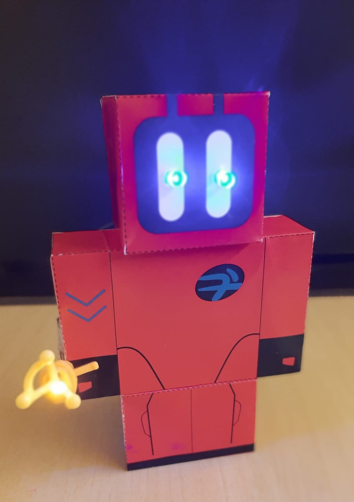
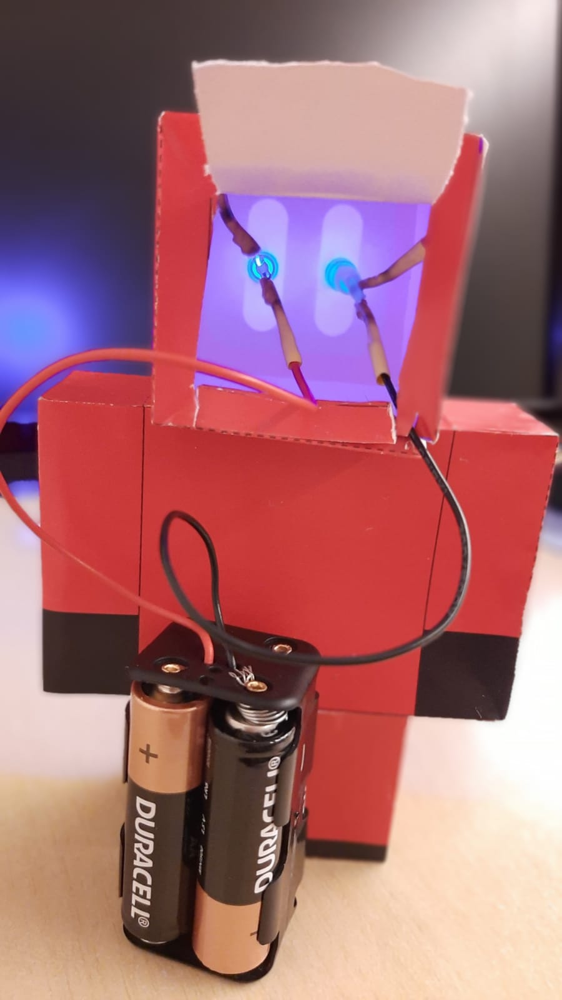

Nós e a nossa escola
EMEB Professora Ermínia Paggi
Silvia Helena Neves de Sousa (PAPP) e Kátia Bucci (Arte)
Eu sou a Kátia professora de Arte desde 2014 na rede municipal de São Bernardo do Campo
Meu ícone è BASTET. Deusa egípcia que representa a música e a dança.
Meu testemunho
Minha Escola e Meus Alunos

Empatizei com:
Este Projeto de robótica apresentado em SBC
Este Video no site youtube sobre Brinquedos incríveis para fazer em casa.
Meus Componentes
 |
 |
|---|---|
| Kit Arduíno Iniciante V7 | Kit Arduíno Iniciante V8 |
Nosso primeiro protótipo - Ermínia 1.0
|  |  |
 |
|---|
Programação realizada no Pandorabots Bate Papo sobre as ODS's - Objetivos de Desenvolvimento Sistentável.